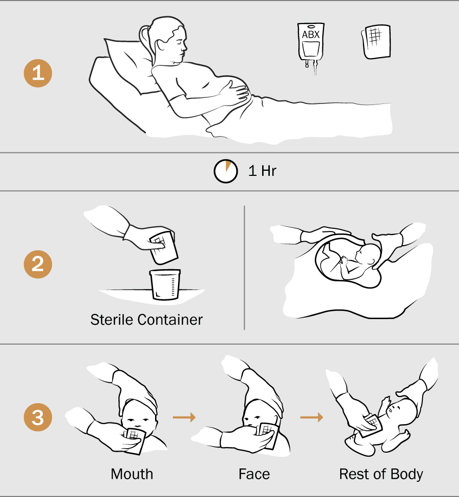

User Experience. Design. Code. Art.
A selected portfolio of imaginative ideas.
Work.

Read Dog
Logo Design
A book subscription service that brings hand-picked books to your armchair.
The logo reflects the warm, engaging nature of the company. Designed to accomodate print, web, and mobile.

Columbia University Medical Center
Research Figure
A revolutionary new medical procedure in obstetrics published in Nature Medicine Journal, February 2016.
Babies pass through an essential environment of microorganisms during birth that C-sections bypass. This graphic embodies the procedure while accompanying text spells out the details. Remaining abstract and symbolic was crucial in order to keep it presentable to diverse viewers.